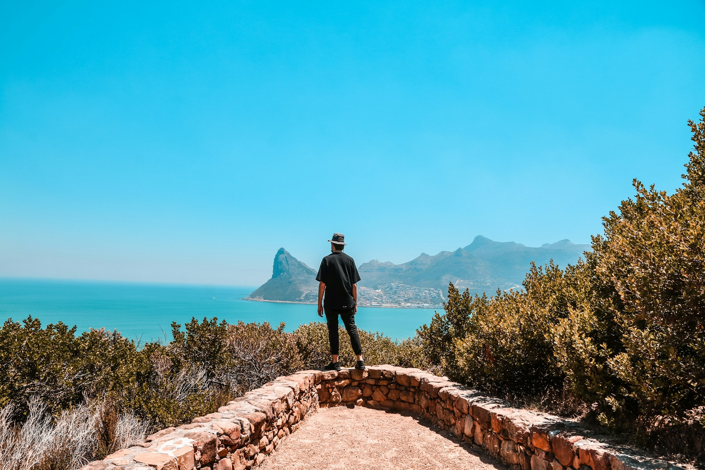
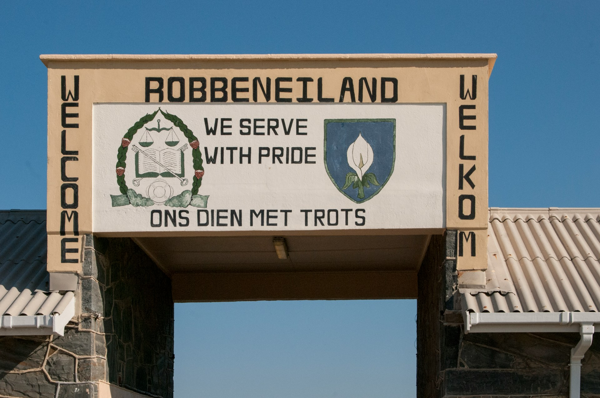
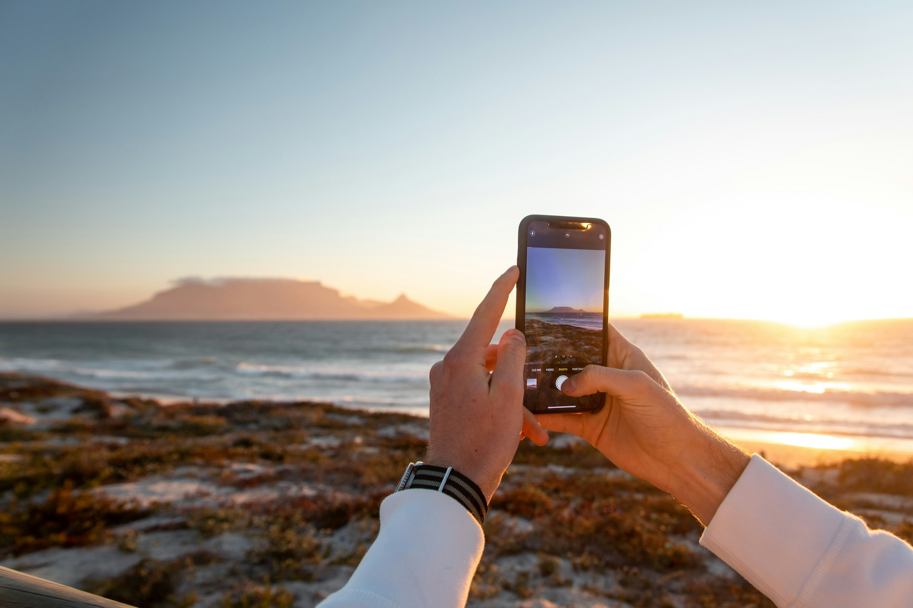

4.8 (156)
coastal

4.9 (112)
cultural

Discover the magic of Cape Town through our handcrafted journeys


everything you need to know about Cape Town tours
There are plenty of high-quality tours in Cape Town to choose from. Looking at ratings and reviews by previous customers, these are the best tours available right now:
Yes, guided tours in Cape Town are worth it. With a guided tour you'll get expert knowledge, convenient transport, and access to some of the city's best landmarks. Guided tours mean you can make the most of your trip, from exploring historic sites like Robben Island to hiking Table Mountain.
One customer who booked this Table Mountain, Penguins, & Cape Point Small Group Tour said: "The tour was very well organised and covered a lot of the main sights in the Cape Town area without feeling rushed. A tremendous contrast from the architecture of Bo-Kaap and Simon's Town to the spectacular scenery of Table Mountain and Cape Point and the wildlife, particularly the Boulder Beach penguins."
Cape Town tours vary in cost depending on the type and duration. Prices range from around US$20 for a city walking tour to US$5,000 and upwards for cross-country boat trips or safari tours from Cape Town. Special activities such as paragliding and shark diving tend to be on the higher end of the price scale.
For a budget option, soak in some of the city's sights on a tour like the Cape Town 30-minute V&A Harbour Cruise for around US$5 per person, where you can cruise through the Alfred and Victoria basins with guided commentary. Pricier options include tours like the Full-Day Private Hiking Table Mountain & City tour (around US$800 for two people), which includes hiking Table Mountain, a cable car ride, and time to explore the city's heritage at Bo-Kaap, Company's Garden, and Iziko Museums Slave Lodge.
Cape Town tours cover a whole range of things to see. Highlights include the famous Table Mountain, the scenic Cape of Good Hope, and the historic Robben Island. On wildlife tours, you might see penguins at Boulders Beach, seals at Seal Island, and whales in Hermanus.
Consider a full-day tour to visit as many attractions and landmarks as possible. For example, the Cape of Good Hope & Boulder Penguins Full-Day Tour from Cape Town allows you to visit Bo-Kaap, Hout Bay, Kalk Bay, the Cape of Good Hope, and the Boulders Beach penguin colony—all in a single day.
Three to five days in Cape Town is generally enough to explore its main attractions. This allows time for a city tour, a trip to the Cape of Good Hope, a visit to Robben Island, plus a day for wine tasting in the nearby Winelands or a scenic drive along Chapman's Peak.
The best months to visit Cape Town are during the summer season from December to March. These months offer long, warm, sunny days, ideal for outdoor activities and relaxing on the beach. For whale watching in Hermanus, the best months are from July to September.
According to travelers, these are the best attractions in Cape Town:
There are tons of great trips to take from Cape Town. According to traveler reviews, these are the best day trips to book right now:
You don't have to spend a fortune to have a great time in Cape Town. Here are some of the best Cape Town activities under US$25:
It's no secret that Cape Town is a haven for outdoor enthusiasts. Here are some of the top outdoor tours to book right now:
According to travelers, these are the top museums and cultural attractions in Cape Town:
Couples will find plenty of romantic tours in Cape Town. Here are some of the top activities to book now, according to previous travelers:
Cape Town has enough activities to entertain every member of your family. Here are some of the top kid-friendly tours to book now, according to previous travelers: